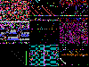
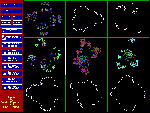

[This is adapted from an excerpt of an article written for THE HAPPY
MUTANT HANDBOOK, Copyright (C) 1994 Rudy Rucker.]
On a good day, I think of hacking as a tactile experience, like reaching
into a tub of clay and kneading and forming the material into the shapes
of my desires. A computer program is a virtual machine that you build by
hand. Hacking is like building a car by building all of the parts in the
car individually. The good thing is that you have full control, the bad
thing is that the process can take so much longer than you expect it to.
Are you sure you feel like stamping out a triple-0 z-ring gasket? And compositing
the plastic from which to make the gasket? The hacker says, "Yaar!
Sounds like fun!"
Of course it does get easier as you build more and more. Often as not, you
can re-use old pieces of code that you hacked for other projects. A hacker
develops a nice virtual garage of "machine parts" that he or she
can reuse. As a beginner, you start out using prefab parts made by others,
but sooner or later, you're likely to grit on down to the lowest machine
levels to see just how those parts really work.
I think the most interesting
things to hack are programs which turn the computer into a window to a different
reality. Programs which express true computer nature. Chaos, fractals, artificial
life, cellular automata, genetic algorithms, virtual reality, hyperspace
--- these are lovely areas that the computer can see into. I once heard
a hacker say, "We are like Leuwenhoek with the microscope. We are peering
into new worlds." In an odd way, the most interesting worlds can be
found when this new "microscope" looks at itself, perhaps entering
a chaotic feedback loop that can close in on some strange attractor.
The correspondence between computers and reality changes the way you understand
the world. Once you know about fractals, clouds and plants don't look the
same. Once you've seen chaotic vibrations on a screen, you recognize them
in the waving of tree branches and in the wandering of the media's eye.
Cellular automata show how social movements can emerge from individual interactions.
Virtual reality instructs you in the beauty of an overhead flock of birds.
Artificial life and genetic algorithms let intelligent processes self-organize
amidst brute thickets of random events. Hyperspace programs let you finally
see into the fourth dimension enough to recognize kinky inside-out reversals
as part and parcel of your potentially infinite brain.
Hacking teaches that the secret of the universe need not be so very complex,
provided that the secret is set down in a big enough space of computation
equipped with feedback and parallelism. Feedback means having a program
take its last output as its new input. Parallelism means letting the same
program run at many different sites. The universe's physics is the same
program running in parallel everywhere, repeatedly updating itself on the
basis of its current computation. Your own psychology is a parallel process
endlessly revising itself.


The Hacker and the Ants